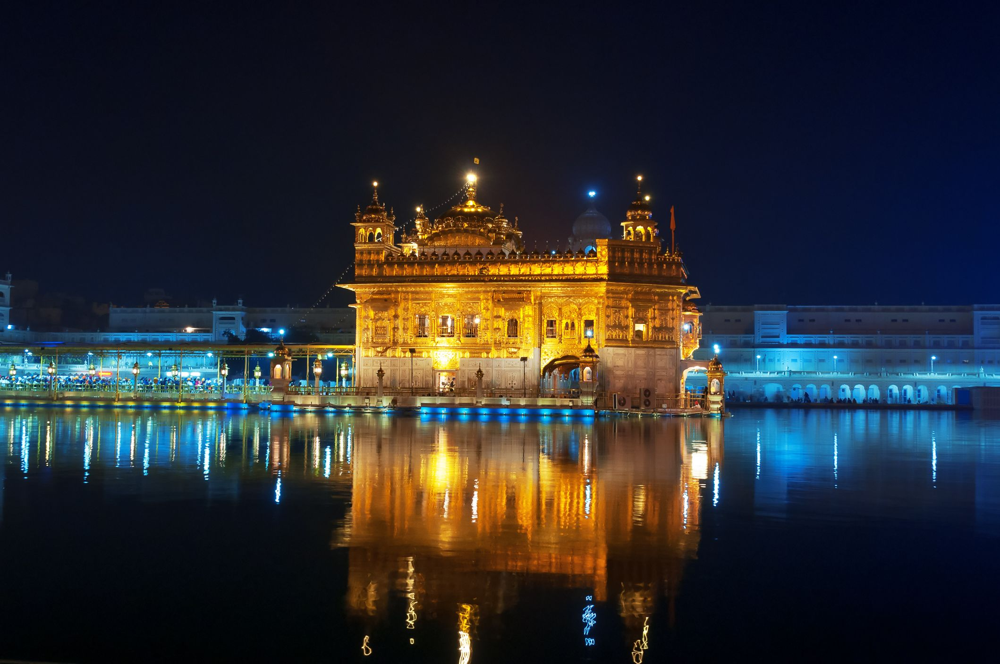

Sri Venkateswara Temple, Tirupati

Overview
One of the holiest Hindu pilgrimage centres in the world, also known as Tirupati Balaji Temple, Sri Venkateswara Temple features Dravidian-style architecture, a gilded dome and a huge statue of the deity.
Suggested Duration For Exploring :
Around 4 to 5 Hours
What To Expect?
The number of pilgrims that come to Sri Venkateswara Temple can exceed 50,000 in a day and the Sarva Darshan can take hours to complete.
Tips :
- Annaprasadam is offered to pilgrims free of cost at the temple.
- devotees tonsure their hair as an offering to god at the temple.
- Electronic devices like cell phones and cameras are not allowed inside the temple and need to be deposited in the temple lockers.
Exploring a destination...
The joy of travel comes in exploring new things. Planting your feet somewhere you’ve never been before brings with it the rush of discovery and the joy of pushing back on the boundaries of your world. But when one does arrive at that fresh frontier, there are ways better than others to begin your journey of discovery. Follow these steps and see the world with a new light.
- Discover a new city through a food tour. Food tour’s are the easiest way to take a tour, learn about the local delicacies, and the best of all, get great tips that aren’t just “local” tips for tourists, but sometimes, lessons for a lifetime too
- Use Public Transportation. When you are in a new city, you can possibly see places and people that you wouldn’t normally see when simply walking to the places that checks your list. Some buses or rails take you to parts of the city you wouldn’t get to see otherwise. Whilst using public transportation, just ensure that you are following the local norms and do remember to watch the locals!
- Find a local festival. Go beyond what other tourists might do while visiting a place. Look for the unique things you would want to do. Use social media or the local tourism website to find out what’s going on locally. You may have to move out of the center of the city to do some of the less popular but more unique things, so just keep that in mind!
Gallery

Similar Destinations...
-
Ram Mandir

-
Golden Temple
-
Kedarnath

-
Tirupati Balaji
-
Dashashwamedh Ghat